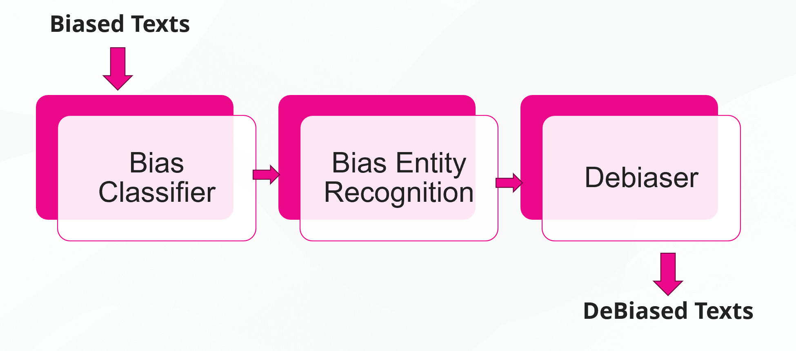

Welcome to UnBIAS
Overview
PyPI: https://pypi.org/project/UnBIAS/
UnBIAS is a is a state-of-the-art text analysis and debiasing toolkit that aids in assessing and rectifying biases in textual content. Developed with state-of-the-art Transformer models, this toolkit offers:
-
Bias Classification: Evaluate textual content and classify its level of bias.
-
Named Entity Recognition (NER) for Bias: Detect specific terms or entities in the text which may hold biased sentiments.
-
Text Debiasing: Process any text and receive a debiased version in return. This ensures the content is neutral concerning gender, race, age groups, and is free from toxic or harmful language.
Our models are built on BERT, RobERTa and Meta - LLama-2-7B quantized models.

How to install UnBIAS
To use UnBIAS, you'll need to have Python installed on your system. UnBIAS supports Python3 and above.
Installation via pip
The recommended way to install UnBIAS is via pip, the Python package manager. Open your terminal or command prompt and run the following command:
Quickstart
The UnBIAS library provides a function: run_pipeline_on_texts which will perform
bias classification, NER for bias, and generate a debiased version of your text. A simple usage of the
library is as follows:
from UnBIAS import run_pipeline_on_texts
# Define your test sentences
biased_texts = ["Men make better programmers than woman", \
"People who wear Y clothing are untrustworthy."]
# Run the pipeline on the text. This will return a pandas dataframe with columns:
# [Original_Text, Bias_Classification, NER_Bias, Debiased_Text]
results = run_pipeline_on_texts(biased_texts)
# Save the results to a csv file
results.to_csv('<save_path>.csv', index=False)
If you have a dataset CSV file, you can extract the text column and run the pipeline on it as follows:
from UnBIAS import run_pipeline_on_texts
import pandas as pd
biased_texts = pd.read_csv("<dataset_path>.csv")
# Assuming your CSV has a column called 'Text' that you want to debias
biased_texts = list(biased_texts['Text'])
# run the pipeline and save results
results = run_pipeline_on_texts(biased_texts)
results.to_csv('<save_path>.csv', index=False)
Refer to the API Reference for more information about run_pipeline_on_texts.
Additional Highlights
-
Pre-trained Models: Uses specialized models from the renowned Hugging Face's Transformers library. We have also tailored Transformer-based models for bias detection and debiasing tasks newsmediabias-hub.
-
Efficient Pipelines: Designed with intuitive pipelines, making it easier to incorporate into applications or other projects.
-
Analytical Tools: Handy tools available to transform results into structured data for further analysis.
What to do next?
- You can individually run each stage of the pipeline. For instance, maybe you only care about debiasing text without concern for classification or NER for bias. To see how to do this, refer to the BiasPipeline class in the API.
- Debiasing text works by prompting the Llama2 LLM with a specific prompt. You can modify this prompt to suit your needs. See the Constants section for more information.
Project Information
- License: MIT
- PyPI: https://pypi.org/project/UnBIAS/
- Source Code: https://github.com/VectorInstitute/NewsMediaBias OR ask email: Shaina Raza
Contact Me
Shaina Raza, PhD
Applied Machine Learning Scientist - Responsible AI
Vector Institute for Artificial Intelligence
Email: Shaina.raza@utoronto.ca
A special thanks to Oluwanifemi Bamgbose, Brandon Jaipersaud, Shardul Ghuge and Tahniat Khan who helped in the development of this project.